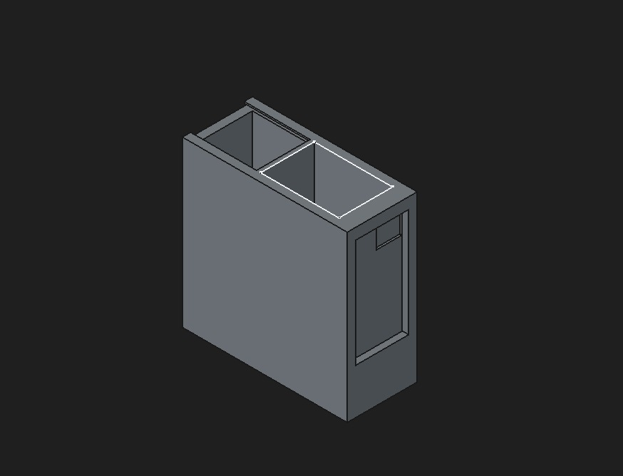
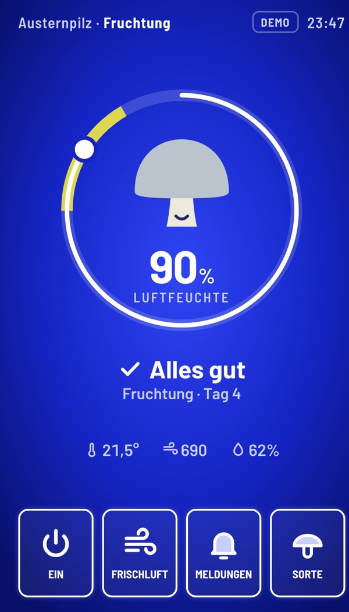
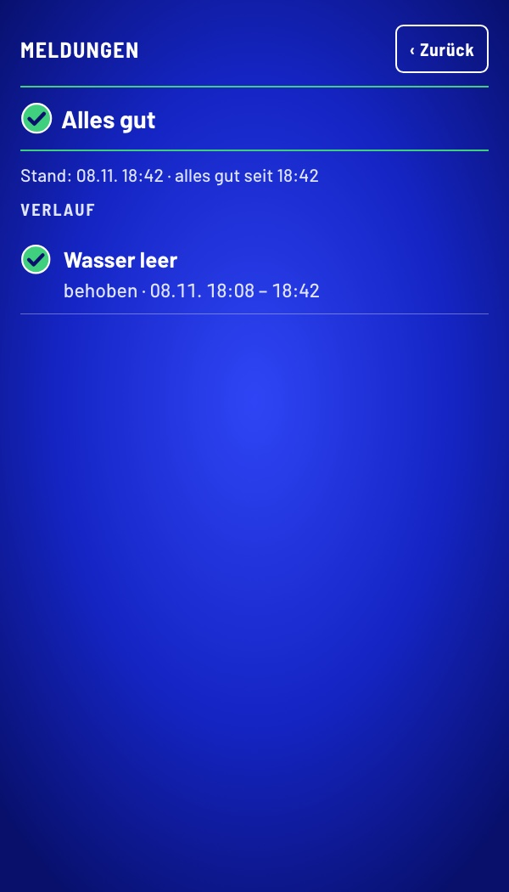
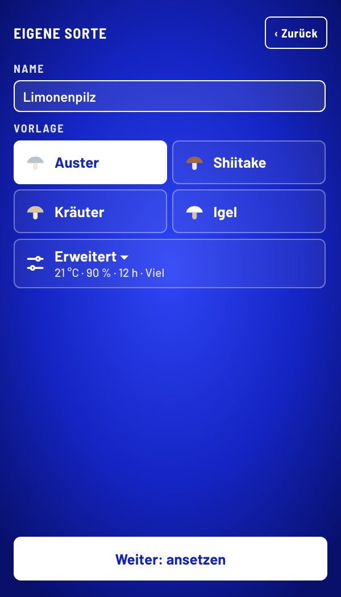
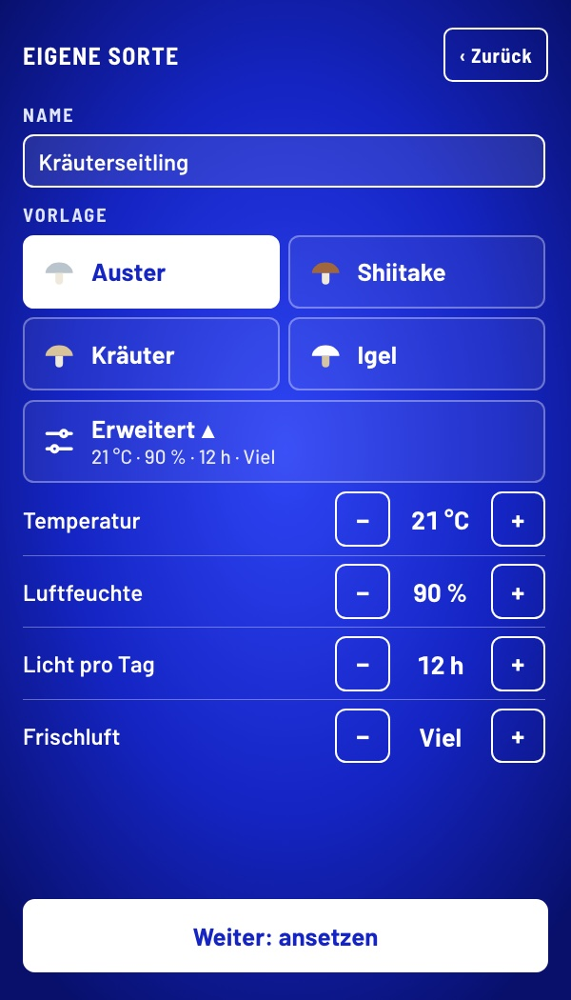
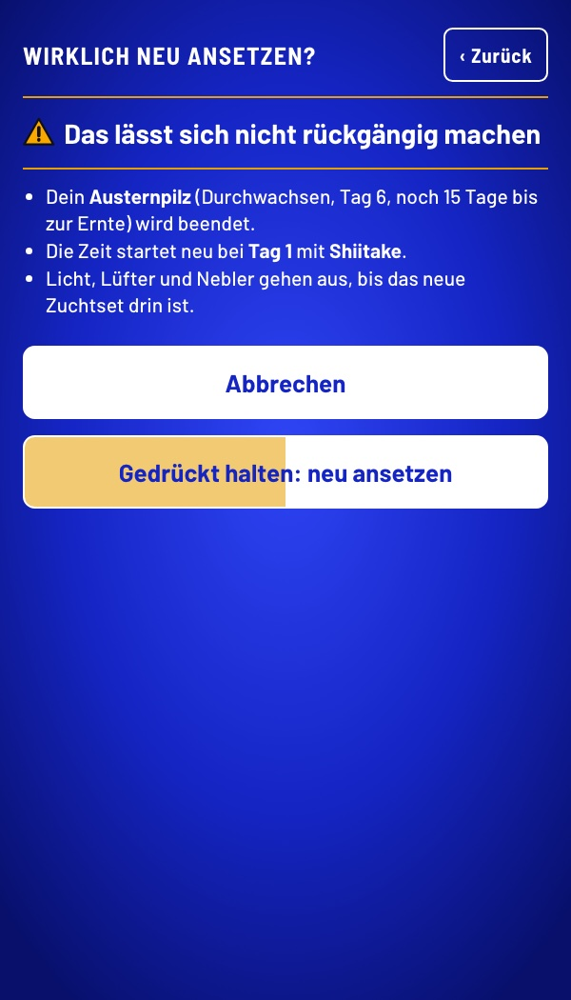
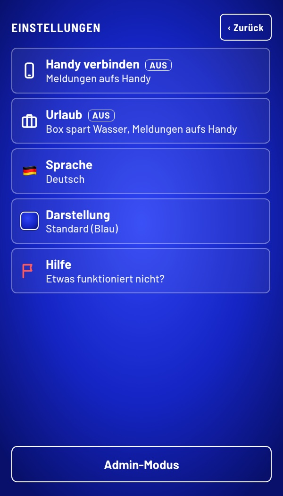
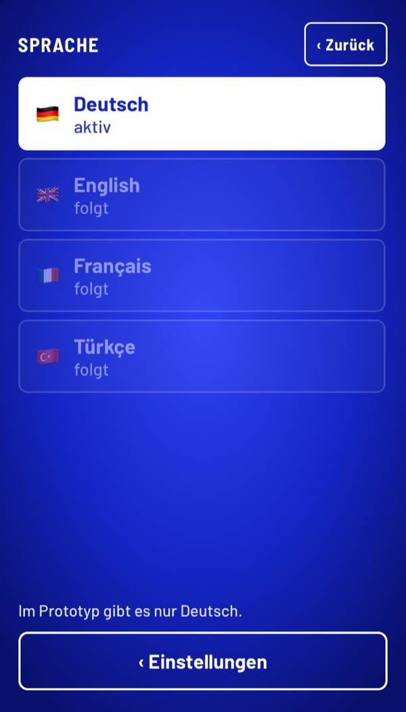
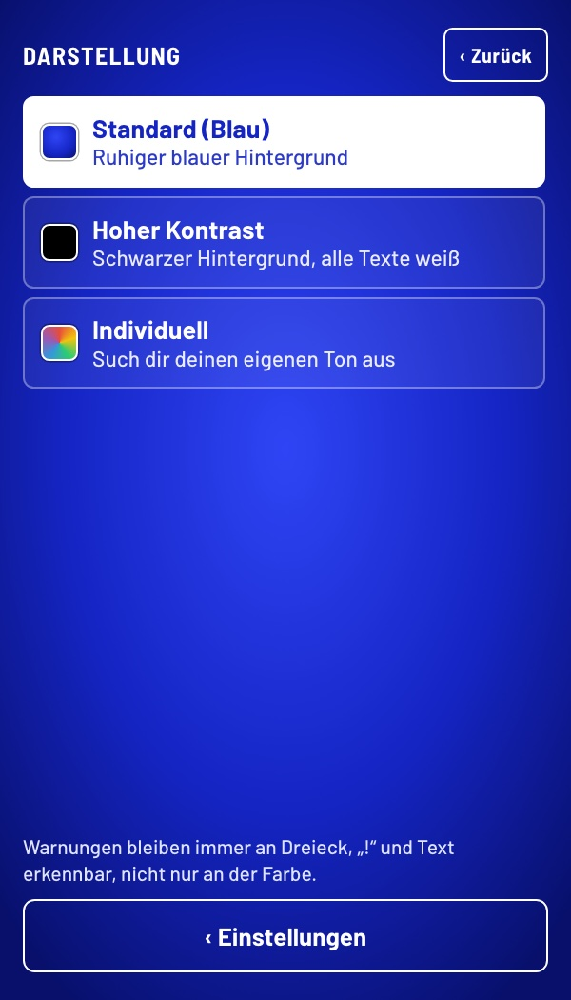
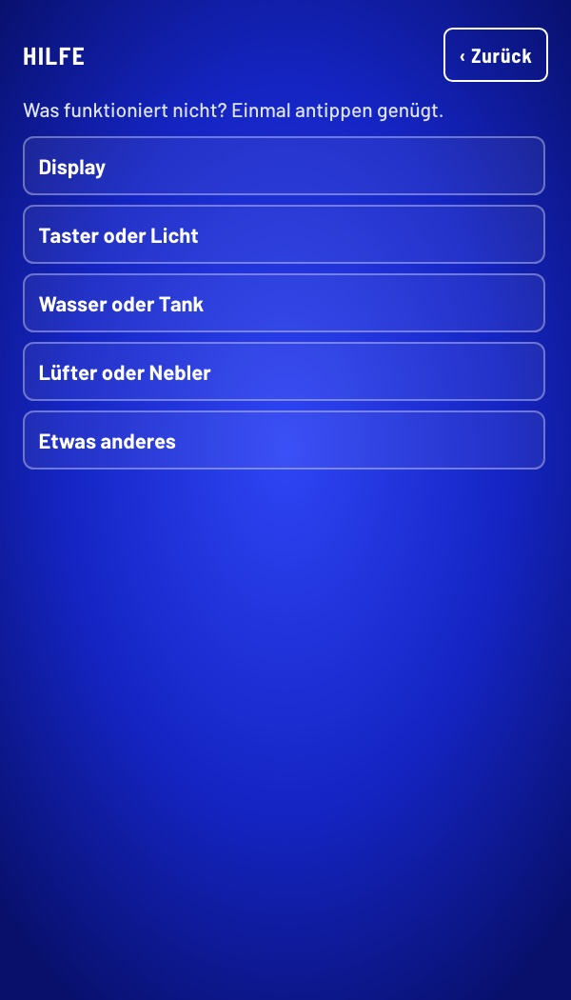

Pilz
GrowBox.
Eine Growbox, die aussieht wie ein Küchengerät, sich selbst um Licht, Feuchte und Wasser kümmert und an der jeder mit einem Blick sieht, ob alles gut ist.
Mensch-Maschine-Interaktion · Prof. Zagel
Hochschule Coburg · WS 2026/27
Felix Schnapp · Ardit Becolli · Felix Zimmermann
Was im Booklet steckt.
Sechs Kapitel: für wen, wie die Box entstanden ist, was drinsteckt, wie man sie bedient und was die App kann. Jede Entscheidung steht mit Grund aus der Vorlesung und dem Nachteil, den wir dafür in Kauf nehmen.

- 03Für jeden gemacht.

- 04Vom Aquarium zur Mikrowelle.
- 05Wie eine Mikrowelle. Nur ohne Knopfsalat.
- 06Ein Taster. Eine Bedeutung.

- 07Vom Papier ins CAD.
- 08Vom Rohdruck zum Prototyp.
- 09Jedes Detail hat einen Zweck.
- 10Klein für die Küche. Groß für mehr Ernte.

- 11Ein Zustand. Zwei Ansichten.


- 12–14Konzept
- 15–17Bedienung
- 18Weggelassen & offen
- ··Fünf bis sechs Seiten, folgen.
Vom Aquarium
zur Mikrowelle.
Eine Form, die jeder kennt: Aus dem Aquarium (V1) wurde die Mikrowelle, links das Fenster, rechts das Bedienfeld.
| Entscheidung | Grund | Nachteil |
|---|---|---|
| V1 → V2: ein Gerät statt zwei | Das Display hat einen festen Platz, kein Kabel liegt dazwischen. Die Form einer Mikrowelle kennt jeder (mentales Modell). | Der Technikraum kostet Breite. |
| iPhone statt 5-Zoll-Touchdisplay | Scharfes Display, die Web-Oberfläche lässt sich am Laptop testen und direkt zeigen (Prototyping). | Das iPhone ist nur Platzhalter für ein festes Display. |
| V2 → V3: größer, Tank unten mit TrennwandIm Prototyp sitzt der Tank noch oben (siehe „Alle Features“). | Wasser unten, Elektronik oben, dazwischen eine Trennwand: Läuft einmal Wasser aus, erreicht es die Elektronik nicht. Was schiefgehen kann, geht irgendwann schief (Murphy's Law). | Braucht mehr Stellfläche in der Küche. |
| LED im Rahmen hinter Blende statt im Deckel | Das Licht fällt nur auf die Pilze, wer davorsteht, wird nicht geblendet. Der Deckel bleibt kabelfrei und abnehmbar. | Aufwendiger: Alle vier Profile brauchen einen Kanal für die LED. |
Wie eine Mikrowelle.
Nur ohne Knopfsalat.
V3 hat zwei Räume: Links wachsen die Pilze, rechts liegt der Technikraum.
Vorn bleiben nur das Bedienfeld und der Lichtschalter.
 1
2
3
4
5
6
1
2
3
4
5
6
- 1PilzkammerPlexiglas, Tür links angeschlagen. Man sieht die Pilze, ohne zu öffnen.
- 2TechnikraumRaspberry Pi, Lüfter, Nebler und Heizung. Eine Trennwand hält die Elektronik oben, das Wasser unten.
- 3TankUnten im Technikraum, eingefüllt wird oben hinten durch eine Öffnung.
- 4LED im RahmenIm oberen Rahmen statt im Deckel: Der Deckel bleibt kabelfrei und abnehmbar.
- 5BedienfeldDisplay und Lichtschalter, mehr gibt es vorn nicht (siehe „Ein Taster. Eine Bedeutung.“).
- 6Kamera, fest eingebautHinten rechts in der Kammer. Nichts zu verstellen, immer derselbe Blick: Die Bilder in der App bleiben vergleichbar.
Ein Taster.
Eine Bedeutung.
Außer dem Display gibt es drei haptische Elemente: Taster, Türgriff und Deckelgriff.
DeckelgriffTürgriffTaster| Entscheidung | Grund | Nachteil |
|---|---|---|
| Taster schaltet nur das Licht | Groß, also auch mit zitternder Hand getroffen (Speed-Accuracy-Tradeoff). Seine Form zeigt: drücken (Affordance). | Ein Taster zeigt nicht, ob das Licht an ist. |
| Lichtschalter weckt nicht das Display | Ein Bedienteil, eine Wirkung. Mit zwei Wirkungen wüsste man nie, ob man gerade Licht oder Display schaltet (Modusfehler). Das Display weckt ein eigener Sensor. | Zwei Bedienteile statt einem: Schalter fürs Licht, Sensorleiste fürs Display. |
| Griffe grau statt schwarz | Grau hebt sich von der schwarzen Box ab, die Griffe findet man ohne Suchen. Orange bleibt für Warnungen. | ✕ |
| Kein Warnlicht an der Box | Warnungen erscheinen nur als oranger Punkt auf dem Display, nicht zusätzlich an einer zweiten Stelle. | Fällt das Display aus, gibt es keine Warnung. |
| Tank vorn mit Sichtfenster | Die Linie im Sichtfenster zeigt denselben Füllstand wie der Balken „Wassertank“ auf dem Display (Mapping). | Im Prototyp noch nicht umgesetzt: Dort sitzt der Tank oben. |
| Schieber statt Einfüllklappe | Tank hinten herausschieben, von oben füllen. Kein Zielen mit der Gießkanne auf eine kleine Öffnung. | Zum Nachfüllen muss man an die Rückseite der Box. |
Ein Zustand.
Zwei Ansichten.
Damit Box und App nie Unterschiedliches zeigen, gibt es den Zustand nur an einer Stelle: im Raspberry Pi. Das Display an der Box und die App lesen ihn nur und schicken Befehle zurück.
| Baustein | Technik | Stand im Prototyp |
|---|---|---|
| Steuerrechner | Raspberry Pi, Python, Live-Updates per WLAN | Code geschrieben, läuft noch nicht auf dem Pi: das Bedienfeld hatte Vorrang |
| Bedienfeld | Webseite im Vollbild, gesperrt gegen Verlassen | läuft, am Laptop ohne Hardware testbar |
| Taster und LED | direkt am Pi angeschlossen | echt; Ansteuerung der Streifen folgt |
| Messwerte | Temperatur, Feuchte, Tank | simuliert, für die Vorführung |
| App | liest denselben Zustand | Live-Sync am Mac gezeigt, mit dem Pi geplant |
| Gehäuse | 3D-Druck, Plexiglas | gebaut (siehe CAD und Prototyp) |
Warum ein Zustand?
Model View Controller: ein Modell, mehrere Ansichten. Markiert der Power-User unterwegs eine Meldung als gesehen, zeigt die Box das sofort. Gleiche Wörter und Farben in beiden (Konsistenz).
Warum simuliert?
Im Prozess entstehen bewusst nur Prototypen, ihr Code ist nicht zum Weiterverwenden gedacht (Implementierung). Der Prototyp prüft Bedienung und Aussehen, nicht die Implementierung (Houde & Hill).
Drei Ideen.
Eine gewählt.
Bevor es ein Display gab, haben wir drei Richtungen skizziert. Gewählt haben wir die minimalistischste: Mit ihr ist Ingrid am schnellsten vertraut. Aus den beiden anderen ist je ein Teil geblieben.
| Entscheidung | Grund | Was blieb · warum |
|---|---|---|
| A verworfen: Pilz-Begleiter | Stimmungen einer Figur muss man deuten, Punkte und Level machen aus der Box ein Spiel und lenken von ihrem Zustand ab. | Der Pilz wächst im Ring mit: Fortschritt sieht man, ohne dass die Box zum Spiel wird (Gamification, Progression). |
| B verworfen: physisch zuerst | Ohne Display muss man sich merken, was der Drehknopf gerade schaltet und welche LED was bedeutet. | Ein echter Schalter fürs Licht: Man ertastet ihn, ohne aufs Display zu schauen. |
| C gewählt: radikal einfach | Form, Farbe und ein Wort erfasst man mit einem Blick, ohne zu lesen oder zu lernen (Model Human Processor). | Großer Status mit bekannten Zeichen und drei Kacheln wie in einer App: Das kennt jeder vom Handy. |
Vom Entwurf
zum Bedienfeld.
Sieben Änderungen von V1 zur finalen Version.

7
421356| Nr. | Art | Änderung | Grund |
|---|---|---|---|
| 1 | größer | Größere Schrift, Ziele ≥ 44 pt | Lesbar mit Lesebrille, treffbar mit zitternder Hand (Speed-Accuracy-Tradeoff). |
| 2 | neu | Warnpunkt oben im Kopf | Eine Warnung fällt sofort auf, auch im Vorbeigehen (präattentiv). |
| 3 | neu | Handy-Symbol zum Verbinden | Wer mehr will, holt sich die App, das Display bleibt schlicht. |
| 4 | geändert | Ring: Tage bis zur Ernte statt Luftfeuchte | Ein klares Ziel mit sichtbarem Fortschritt (Progression). |
| 5 | neu | Grüner Kreis mit Haken | Ein Zeichen, das jeder kennt (Mentales Modell). |
| 6 | neu | Balken zu den Werten, Tank in Tagen | Ob ein Wert passt, zeigt der Balken auf einen Blick. |
| 7 | entfernt | Ein-Knopf und Frischluft gestrichen | Die Box regelt selbst, ein Aus aus Versehen würde die Pflege stoppen (Murphy's Law). |
Warum Blau
statt Schwarz?
Das wurde in der Präsentation gefragt. Die Antwort: Schwarz ist schon belegt. Schwarz heißt Standby, Blau heißt die Box läuft.


| Entscheidung | Grund | Nachteil |
|---|---|---|
| Blau als Standard | Schwarz bleibt für Standby frei. Blau nur als Fläche, blaue Schrift ist unscharf (Farbsehen). | Wer Schwarz lieber mag, muss es einstellen. |
| Oranger Warnpunkt | Blinkendes Orange auf Schwarz fällt sofort auf, ohne Suchen (präattentiv). Kam in der Präsentation am besten an. | Eine Warnung im Betrieb blinkt nicht, sie steht als gelbes Dreieck mit Text da. |
| Hoher Kontrast | Weiß auf Schwarz hebt sich am stärksten ab, gut bei schwachen Augen (Kontrast). | Betrieb und Standby unterscheiden sich dann nur noch dadurch, ob die Anzeige an ist. |
Bedienung. Auf einen Blick.
So sieht Ingrid das Bedienfeld im Alltag. Aus der Ferne sieht sie, ob etwas zu tun ist, aus der Nähe, was. Muss sie handeln, gibt es genau einen Knopf. Danach steht das Startbild da.

Neue Pilze. Selbst eingestellt.
Zwei Wege, mit Absicht: Ingrid wählt nach der Ernte aus dem Pilzkatalog, ein Tipp genügt. Wer mehr will, gestaltet selbst, mit Name, Vorlage und eigenen Werten.





Einstellungen. Ein Zahnrad.
Was man selten braucht, liegt hinter dem Zahnrad oben rechts. Fünf Zeilen, jede sagt in einem Satz, was sie tut. Das Startbild bleibt dadurch frei.

- An oder aus steht in der Zeile.Handy und Urlaub zeigen ihren Zustand, ohne dass man sie öffnet.
- Handy verbindenCode in der App eingeben, dann gehen Meldungen aufs Handy.
- UrlaubVorher steht, was sich ändert: weniger Wasser, Meldungen aufs Handy. Starten mit Bestätigung, damit es nicht aus Versehen passiert, beenden mit einem Tipp.
- Farbige SymboleSprache, Darstellung und Hilfe tragen Farbe: Flagge, Farbfeld, rote Fahne. Wenn etwas nicht stimmt, findet man sie am schnellsten.
- Admin-Modus ganz untenAbgesetzt für Service und Vorführung, Ingrid braucht ihn nicht.



Bewusst weggelassen.
Und was als Nächstes kommt.
Das Bedienfeld ist einfach, weil vieles fehlt. Jede Lücke hat einen Preis. Darunter: was als Nächstes kommt.
Taster und LED echt, Messwerte simuliert.
Cognitive Walkthrough mit einer Person um 70, danach AttrakDiff.
Feuchte, Temperatur und Tank messen, Nebler und Lüfter schalten.
Ein Bild pro Tag, nach der Ernte ein Zeitraffer. Die Idee steht unten.
Die feste Kamera in der Kammer macht jeden Tag ein Bild aus demselben Blick. Nach der Ernte zeigt die App den Zeitraffer, und der Power-User kann ihn teilen.